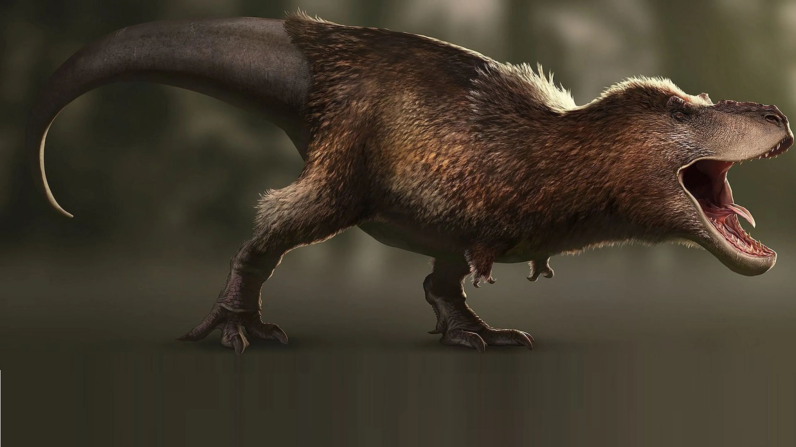

Tyrannosaurus Rex
¿Como eran los Tyrannosaurus Rex?
Su cabeza
La cabeza de un T. rex era inmejorable. Con un tamaño de un metro y medio, este feroz carnívoro evolucionó de forma ideal para triturar su comida, su cráneo rígido le permitía dirigir toda la fuerza de sus músculos a un solo mordisco, llegando a ejercer hasta seis toneladas de presión. Esto implica que un de un solo mordisco el T.rex hubiese sido capaz de arrancar 225 kilos de carne. Este dinosaurio utilizaba sus 60 dientes aserrados, cada uno midiendo 20 centímetros de largo aunque el record es de 30 centimetros, siendo el diente de un dinosaurio mas grande encontrado hasta la fecha, para perforar y extraer la carne, lanzando a su presa al aire y tragándola entera. Para evitar el sobrecalentamiento al aplastar a las presas con sus poderosas mandíbulas, este gigantesco animal tenía aberturas en la cabeza para ayudar a enfriar su cerebro, similares a las de los caimanes.
Sus brazos
Los brazos de los Tiranosaurios eran cortos en comparacion a su cuerpo, medían en torno a 1 metro de longitud completamente extendidos, siendo considerados por algunos expertos como vestigiales (la vestigialidad es la retención durante el proceso de evolución de estructuras o atributos genéticamente determinados que han perdido parte o la totalidad de su función ancestral, en este caso hace referencia a que el tiranosaurio dependia tanto de su cabeza y la potencia de su mordida que en escasas ocaciones utilizaba los brazos, tanto que sus brazos evolucionaron de esa forma). Sin embargo, el húmero contaba con grandes áreas de inserción de músculos, lo que habría hecho de las extremidades delanteras bastante fuertes, por lo que se teorizó que se pudieron usar como una herramienta para agarrar a una pareja durante la cópula.
Otra función sugerida es la de ayudar al animal a levantarse del suelo. Algunos análisis biomecánicos podrían sugerir su uso para agarrar a presas que intentaran escapar antes de rematarlas con sus poderosas mandíbulas. Los resultados de estos análisis arrojaron que el bíceps de un Tyrannosaurus podía levantar hasta 199 kilogramos de peso por sí solo, 3.5 veces más fuerte que el de el ser humano promedio. La movilidad de sus brazos, sin embargo era limitada, pudiendo mover sus hombros y codos solo unos 40 y 45 grados respectivamente. Esta movilidad limitada sugiere que estarían diseñados para agarrar a gran velocidad y de manera firme con su gran fuerza, sin soltarse a pesar de los movimientos de una presa. En este estudio, Kenneth Carpenter y Matt Smith desmintieron la creencia de que los brazos de Tyrannosaurus eran inútiles y que se trataba de un completo carroñero por esto. Esta visión depredadora de los brazos como herramientas secundarias de caza sería compartida por Steven M. Stanley, que postuló que los brazos podrían haber sido usados para causar un gran daño en una presa a base de zarpazos. A pesar de esto, otros expertos siguen reacios a estas hipótesis, ciñéndose a la visión original de Osborn de unos brazos de utilidad exclusivamente ligada a la reproducción. Aunque el T.rex tenga uno de los brazos mas cortos de entre los dinosaurios en comparacion a su cuerpo, tiene un contraste total con sus patas traseras, que son las mas largas entre todos los teropodos conocidos.
¿Manospondylus Gigas, Dynamosaurus Imperiosus, Tyrannosaurus Rex? ¿Como se llama en realidad?
En 1905 Henry Fairfield Osborn describio a dos especies de dinosaurios, a Tyrannosaurus Rex y a Dynamosaurus Imperiosus, a partir de 5 esqueletos parciales descubiertos por un miembro de su equipo, el paleontologo Barnum Brown entre 1902 y 1905. Pero luego, se descubrio que los restos pertenecian a una misma especie, por lo que Tyrannosaurus Rex quedo como nombre válido al estar descrito páginas que Dynamosaurus Imperiosus dentro del mismo artículo. Pero en realidad, ya se habian descubierto restos de Tyrannosaurus antes, solo que en aquel tiempo aun no lo sabian. En 1874, el geólogo Arthur Lakes encontro algunos dientes, pero no se determino ninguna especie. A dia de hoy se sabe que pertenecen a Tyrannosaurus Rex, por lo que son los primeros restos que se tienen registro de Tiranosaurus. En 1890, restos postcraneales de Tyrannosaurus fueron descubiertos por John Bell Hatcher, en Wyoming, aunque en un principio se atribuyeron a Ornithomimus Grandis (actualmente un genero dudoso de Deinodon). Pero no fue hasta 1892 que Edward Drinker Cope describiera a Manospondylus Gigas, a partir de una vertebra parcial de un supuesto ceratopsido, aunque luego Jhon Hatcher lo identificaria como los de un terópodo en lugar de los de un ceratópsido. Esto provocaria problemas en la nomenclatura de Tyrannosaurus en el futuro.
Esta es la mandibula de un Dynamosaurus, pero hoy sabemos que le pertenece a un T.Rex
En 1917, Osborn noto las similitudes de M.gigas, una vez ya clasificado como un teropodo, y T.rex, pero por la naturaleza fragmentaria de M.gigas nunca pudo sinonimizarlos. Recien en Junio del año 2000, un equipo del Instituto Black Hills descubrieron un especimen de Tyrannosaurus Rex en el mismo lugar donde Cope describio a Manospondylus, tratandose con total seguridad de que eran una misma especie. Esto suponia otro problema, ya que segun el Codigo Internacional de Nomenclatura Zoológica, el nombre mas antiguo es el que mantiene, y en este caso era Manospondylus Gigas, dejando a Tyrannosaurus Rex como nombre no válido. Pero gracias a una nueva regla de la cuarta edicion del codigo que entro en vigor en Enero de ese mismo año, el cual describe que el nombre mas usado es el que tiene mayor valor, por tanto se acabo por mantener el nombre de Tyrannosaurus Rex al ser el de uso popular, y al uso nulo de Manospondylus Gigas en mas de 50 años. Y se acabo dejando a Tyrannosaurus Rex como nomem protectum (nombre protegido) y a Manospondylus Gigas como nomem oblitum (nombre olvidado) que cayo en desuso por su falta de restos, y se acabo sinonimizando como Tyrannosaurus Rex.
Este no es el unico caso en el que se debate si una especie es un sinonimo de T.rex. En la actualidad, existe un debate sobre si Nanotyrannus es un sinonimo de Tyrannosaurus Rex o es una especie aparte.